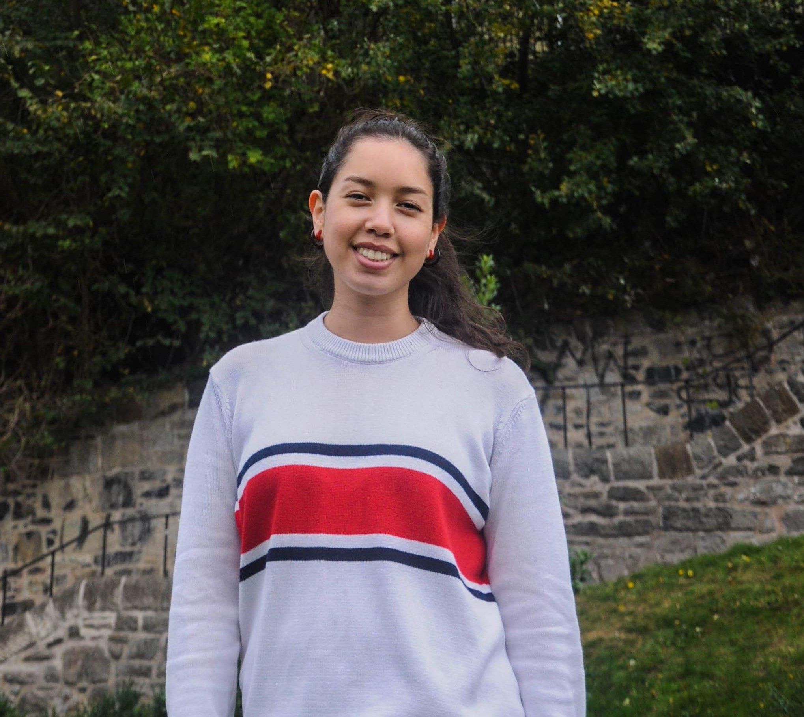

Othello was the first game with a graphical interface that I developed for a programming course.
It is a two-person strategy game where the objective is to fill the entire board with your
pieces. This project was a challenge as it was my first game project, however I enjoyed the challenge
as it pushed my programming abilities.
python
tkinter
game logic
game design
Marissa Salcido
This group project is a simple search engine that searched through the university's webpages
under the department of Information & Computer Science. I focused on the backend and developed
the algorithms to weight, rank, and retrieve web pages based on the parsed search queries. There were challenges
we had to overcome such as scheduling conflicts, although we overcame them and had such
a fun experience working in a group.
python sql VS Code SEO
information retrieval
python sql VS Code SEO
information retrieval
My personal website is the most current project I am working on. My vision for this website is to have it be a
place where I can showcase my skills in web development and experiment with new design/animation ideas. I began to
study HTML/CSS and Javascript on my own on July 2019 and had my first working website by the end of August 2019.
html css javascript jquery
VS Code Invision Studio web design
html css javascript jquery
VS Code Invision Studio web design
Marissa Salcido. Student programmer. Driven worker. Hiking enthusiast.
Education

Education | University of California, Irvine
Graduation | June 2020
Degree | B.S Computer Science
GPA | 3.4
Selected Coursework
Intermediate Programming
Introductory Computer Organization
Principals in System Design
Data Structure Implementation & Analysis
Computer Networks
Information Retrieval
Principles of Operating Systems
Requirements Analysis & Engineering
- Intermediate Programming
- Introductory Computer Organization
- Principals in System Design
- Data Structure Implementation & Analysis
- Computer Networks
- Information Retrieval
- Principles of Operating Systems
- Requirements Analysis & Engineering
Skills
Python
C/C++
SQL/PostgreSQL
Git
Eclipse
Visual Studio Code
- Python
- C/C++
- SQL/PostgreSQL
- Git
- Eclipse
- Visual Studio Code

University of Edinburgh | 2018
Study Abroad
During my semester abroad in Scotland, I studied Applied Machine Learning
and Database Systems. I gained valuable knowledge about machine learning concepts
and SQL search queries, however the knowledge I gained abroad reaches beyond.
My global perspective allows me to be more adaptable with multicultural interactions
as well as appreciative of different cultures.
Study Abroad
During my semester abroad in Scotland, I studied Applied Machine Learning
and Database Systems. I gained valuable knowledge about machine learning concepts
and SQL search queries, however the knowledge I gained abroad reaches beyond.
My global perspective allows me to be more adaptable with multicultural interactions
as well as appreciative of different cultures.
Experience + Involvement

UCI Alumni Association | 2017
Marketing Director Assistant
I designed and created event pages for the UCI Alumni
website by using iModules, a page builder and alumni
management software. I also monitored and occasionally
fixed minor html/css inconsistencies across event pages.
website by using iModules, a page builder and alumni
management software. I also monitored and occasionally
fixed minor html/css inconsistencies across event pages.
Computer Science Association (CSA) Officer | 2018
CSA was a club where underclassmen can receive academic
advice, meet with other peers, and solve fun programming
problems. As an officer, I created coding challenges that were
held during club meetings. The club was new; however
meetings consistently had a turnout of about 10 people
within the first few meetings.
advice, meet with other peers, and solve fun programming
problems. As an officer, I created coding challenges that were
held during club meetings. The club was new; however
meetings consistently had a turnout of about 10 people
within the first few meetings.
Interests + Hobbies

When I am not coding or studying, I am either hiking or drawing! My favorite hike
is Old Man of Storr in Scotland. I love the analytical and logical nature of my studies,
however, I also enjoy exploring my creative side through drawing. I've
recently been looking into digital art, specifically pixel art!
is Old Man of Storr in Scotland. I love the analytical and logical nature of my studies,
however, I also enjoy exploring my creative side through drawing. I've
recently been looking into digital art, specifically pixel art!